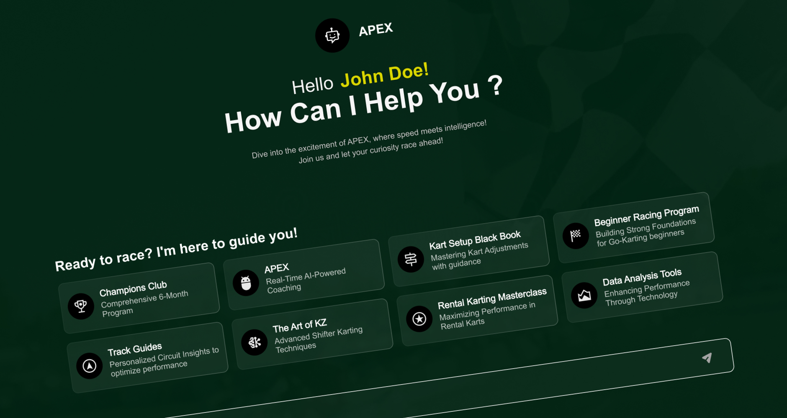
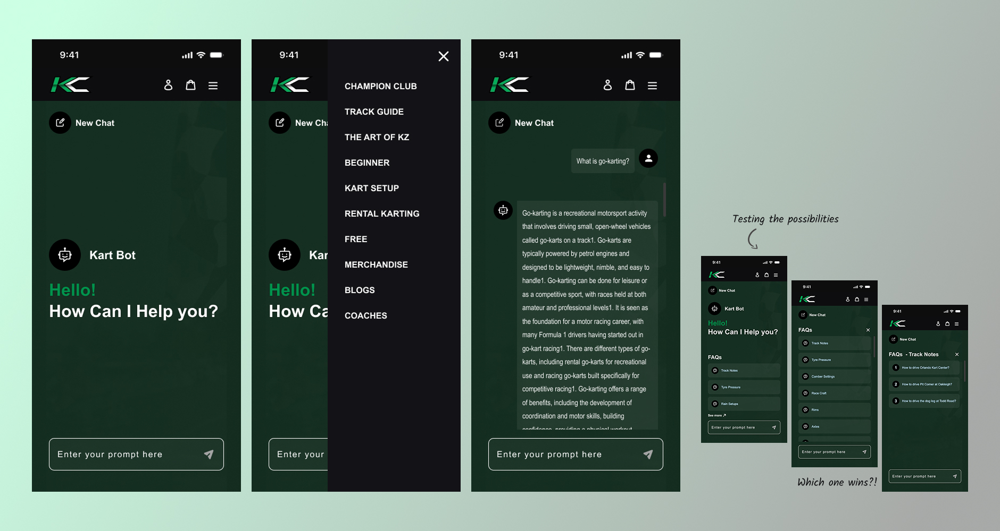

Kartclass Chat Assistant - Conversational Support for Go-Karting Platform
Designing a chatbot for Kartclass meant solving a narrow, specific problem: how do you introduce a new AI assistant into an existing product ecosystem without it feeling bolted on. The assistant had to work within pre-defined brand constraints, address domain-specific user needs unique to go-karting, and function with no existing conversational pattern to build from - all while working equally well across web and mobile, where input methods and screen space differ significantly.
I designed the chatbot to extend Kartclass's existing product rather than sit apart from it, maintaining full visual and tonal consistency with the brand so the AI coach reads as Kartclass's own voice. I structured advice into 6 domain-specific categories reflecting real go-karting vocabulary and questions, then defined a clear conversational structure - greeting → advice → follow-up - so every interaction feels guided rather than improvised.
The result: a chatbot that feels native, not bolted on, with brand voice maintained rather than diluted, and one assistant equally usable across both web and mobile - closing the gap between a niche sport's specific needs and a generic coaching experience that would have missed them entirely.
Designing a chatbot for Kartclass meant solving a narrow, specific problem: how do you introduce a new AI assistant into an existing product without it feeling bolted on.
01
Existing product ecosystem.
The chatbot had to be designed within a product that already had established patterns and user expectations, not as a standalone feature.
02
Pre-defined brand constraints.
Visual and tonal consistency with Kartclass's existing brand styles had to be maintained throughout, leaving little room to design a generic chat interface.
03
Domain-specific user needs.
Go-karting is a niche sport with its own vocabulary, advice categories, and user expectations that a generic coaching chatbot wouldn't address.
04
Undefined conversational structure.
No clear pattern existed for how a real-time AI coach should guide a conversation, from greeting through advice through follow-up.
05
Cross-platform usability.
The experience needed to work equally well on web and mobile, where input methods and screen real estate differ significantly.
The result was a chatbot that had to feel native to Kartclass from day one, with no existing conversational pattern to build on and no room to compromise on brand fit.
My Role & Responsibility
I led the design process end-to-end, covering all stages from discovery to delivery:
Requirement gathering and stakeholder discussions
Domain research and understanding user needs
Defining chatbot interaction flows
Creating style guidelines aligned with existing UI
Designing wireframes (Lo-Fi) and high-fidelity UI (Hi-Fi)
Developing responsive layouts for web and mobile
Prototyping interactions for chat flows
UX Process
01
Research
Studied the go-karting domain and user expectations
Reviewed existing platform UI and design constraints
02
Define
Defined key use cases for chatbot interactions
Structured conversation flows within the dashboard
03
Ideate
Explored interaction patterns for chatbot experience
Planned layouts aligned with existing design system
04
Design
Created Lo-Fi wireframes and Hi-Fi UI screens
Ensured consistency with brand styles and UI components
05
Prototype
Built interactive prototypes for chatbot interactions
Simulated real user conversations and flows
06
Testing
Refined designs based on feedback from Lead UX, Client & Other stakeholders.
Improved usability and clarity through iterations
The Solution
Designed the chatbot to extend Kartclass's existing product, not sit apart from it.
Rather than treating the assistant as a bolted-on feature, chat entry points, states, and interactions were built to feel like a native extension of the product users already knew.
Maintained full visual and tonal consistency with Kartclass's brand.
Every chat bubble, prompt, and response style followed existing brand guidelines, so the AI coach reads as Kartclass's voice, not a generic chatbot template dropped into the product.
Built conversation content around real go-karting knowledge and terminology.
Structured advice into 6 domain-specific categories reflecting the vocabulary and questions actual go-karters ask, addressing the niche needs a generic coaching bot would have missed.
Defined a clear conversational structure from greeting to advice to follow-up.
Mapped the full interaction arc so the AI coach guides users predictably through a conversation, rather than leaving each exchange to feel improvised.
Delivered consistent usability across web and mobile.
Designed input methods and layout to adapt to each platform's constraints, ensuring the assistant felt equally natural whether accessed on a small screen or a desktop browser.

Key Features
Dashboard-integrated chat assistant
Real-time conversational interface
Guided interaction for user queries
Seamless alignment with existing UI system
Responsive design across devices (Web / Tablet / Mobile)
Design Highlights
Step-based structured conversational flow
Unified and consistent visual system
Efficient and clean layout structure
Scalable UI components
Fully responsive design
Outcome & Impact
A Chatbot That Feels Native, Not Bolted On
By extending Kartclass's existing product patterns rather than introducing a new interface paradigm, the AI coach reads as part of the platform users already trust, not an add-on feature competing for attention.
Brand Voice Maintained, Not Diluted
Every chat interaction follows Kartclass's existing visual and tonal guidelines, so the assistant reinforces brand consistency instead of introducing a generic chatbot experience alongside it.
Advice Structured Around Real Go-Karter Questions
Organizing content into 6 domain-specific categories means users get answers shaped by actual go-karting vocabulary and concerns, not generic coaching responses that miss the sport's specific context.
A Predictable Conversation, Not a Guessing Game
Mapping the full interaction arc from greeting to advice to follow-up gives users a coach that guides them consistently, replacing what would otherwise be an improvised, unpredictable exchange.
One Assistant, Equally Usable Everywhere
Designing input methods and layout around each platform's constraints means the experience holds up whether someone opens it on mobile mid-session or at a desktop, removing the friction of a chatbot that only works well in one context.

Learnings
Gained domain knowledge in the go-karting industry
Learned the sport's specific vocabulary and advice categories well enough to structure content a coaching chatbot could actually use, rather than designing from assumptions.
Learned to design within existing design systems and constraints
Every decision had to extend Kartclass's established product and brand rather than introduce something new, teaching me to treat constraints as the brief, not a limitation.
Improved collaboration with senior designers
Sharpened how I bring a clear point of view to reviews while staying open to direction, and learned to ask better questions earlier instead of iterating in the wrong direction first.
Strengthened skills in conversational UX design
Designing a real time AI conversation meant thinking in turns and pacing rather than screens, and learning how small wording choices shift whether it feels like a coach or a script.